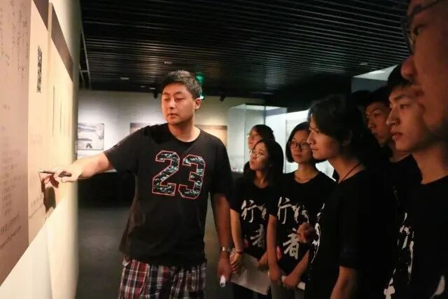
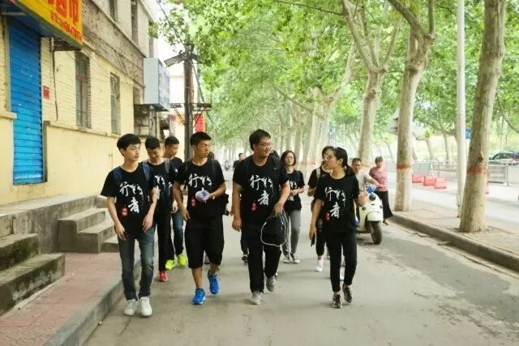
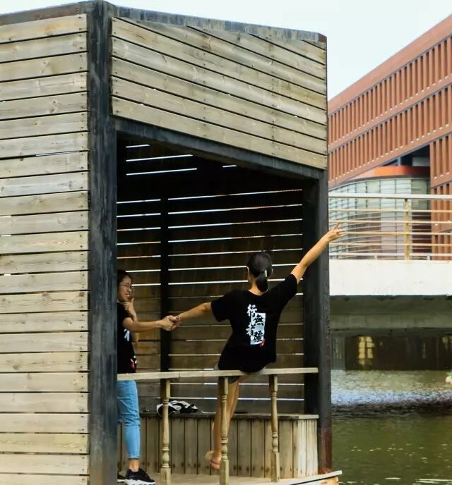

【行者明信片·拾贰·行者无疆，永不止步】

永不止步
行者
无
疆

末篇
——不愿意透露姓名的章静

壹·安阳
7月23日 周日
——那是我第一天所写下的，怀着对安阳文化的感慨和内心满满的激动兴奋。

绵延在中原大地上的文字长河，埋藏在朴实土地下的文物古迹，生长在中华民族的灿烂文化，行走在祖国各处的无疆行者。
行者无疆在安阳，留下的是足迹，带走的是充实。


从接手团队到实地调研开始，一个多月里招人、交流、分组、安排、学习，最终付诸实践，一切按照计划进行着，盼望着心心向往的中原大地馈赠一份珍贵的礼物。
贰
登封行
7月24日 星期一
如果你过得太过轻松，
一定是有人在替你承担很多负重。
虽然前期付出很多精力，做了很多准备，可来到完全陌生的地方，还是有些手足无措。奔波两天多，那么虚的我竟然都不觉得累，因为必须要走在队伍的最前面啊。可能是真的想做好一件事吧。即使出现诸多坎坷，我们都没有忘记为何而出发，明天——还是活力四射的行者无疆 ❤
——那是我第二天写下的，说实话写最后一句是安慰自己的，不想让队员看到自己的负面情绪。
行者——在反思中成长

第一站结束，我们赶往登封，提前没有考虑到登封交通那么不方便，以致于半天的时间都花在坐车上，到达时间比预定晚了将近三小时。晚上的会议很快就结束了，自责却铺天盖地地漫上我的心头，是我没有完全安排好才导致这样的状况？这不太愉快的一天会不会影响队员的积极性？明天该怎么出行？
虽然已经过去，但那种复杂的情绪真的永远都忘不了：第一次带队没什么经验，计划出现偏差，不知道明天又会出现什么情况，以及一遍遍地确认。
吸取了之前的经验，加上充分的准备，第二天的少林寺之行虽累却充实，前一天的种种负面情绪渐渐被感动取代，看到话不多说却把事情都做好的你们，觉得这一次实践到这里就已经成功了。
叁
7月26日 洛阳 星期三
洛阳古城中，感受到前所未有的向往——这是一座有气息的城市❤
年久的房屋依然有人住，看着它，仿佛看到千百年来它的蜕变；遇见的总有异国来者，走进它，欣赏这璀璨的中原文化。
——那是我第四天写下的，仿佛前几日的起起落落都归为平淡，带着对洛阳古都的喜爱和最后一站的不舍。

那么这片土地赐予我们的礼物又是什么呢？
除了这难忘的体验，便是悠久的历史，丰厚的底蕴带来的文化盛宴


我希望在这里遇见你
用绵绵的岁月做背景

河南行
且将新火试新茶
诗酒趁年华
行者无疆
♦
贰
公众号：行者无疆实践团
微博号：行丶者丶无丶疆
邮箱：2758025831@qq.com